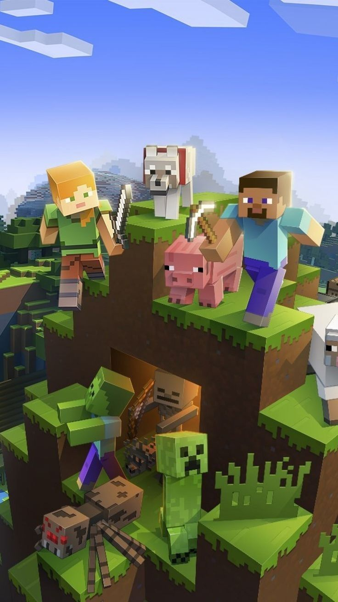
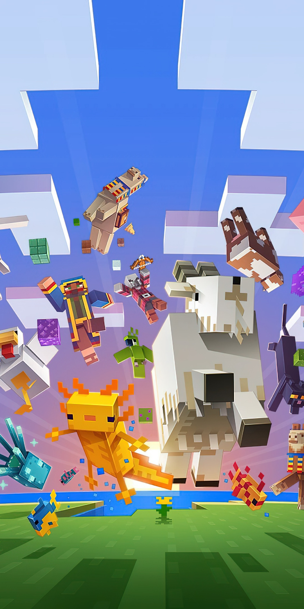
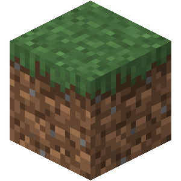
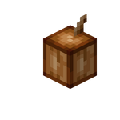
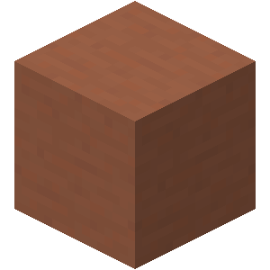
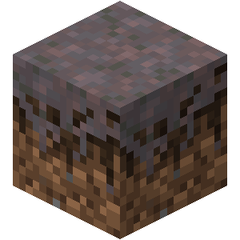
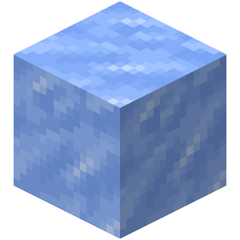
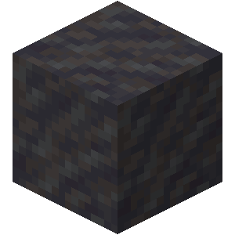

Descrizione
Minecraft è un videogioco sandbox sviluppato da Markus Persson e pubblicato da Mojang Studios. Il gioco permette ai giocatori di esplorare un mondo tridimensionale generato proceduralmente composto da blocchi che rappresentano diversi materiali come terra, pietra, legno e acqua. In Minecraft è possibile raccogliere risorse, costruire strutture, creare oggetti tramite il sistema di crafting e combattere varie creature. Il gioco offre diverse modalità, tra cui Survival, dove bisogna sopravvivere gestendo salute e fame, e Creative, che permette di costruire liberamente con risorse infinite. Grazie alla sua libertà e alla grande community di mod e server multiplayer, Minecraft è diventato uno dei videogiochi più popolari al mondo. È disponibile su molte piattaforme e continua a ricevere aggiornamenti e nuovi contenuti.


Gameplay
Il gameplay di Minecraft si fonda sulla totale libertà d'azione all'interno di un mondo infinito composto da blocchi. I giocatori iniziano la loro avventura senza strumenti, dovendo raccogliere materiali grezzi come legno e pietra per fabbricare i primi oggetti essenziali tramite il sistema di crafting. Una volta stabilita una base sicura, l'esperienza si divide tra l'esplorazione di caverne profonde alla ricerca di minerali preziosi come il diamante e la costruzione di strutture architettoniche complesse. Durante la notte o nelle zone buie, è necessario difendersi dall'attacco di creature ostili come zombie, scheletri e i celebri creeper. Oltre alla modalità Sopravvivenza, che richiede la gestione della fame e dei punti vita, esiste la modalità Creativa, dove ogni limite viene rimosso per permettere ai giocatori di dare libero sfogo alla propria fantasia con risorse illimitate. Il gioco evolve costantemente grazie all'agricoltura, all'allevamento e alla possibilità di viaggiare in dimensioni alternative come il Nether o l'End.
Biomi Esplorabili
| Bioma | Descrizione | Rarità | Blocco Distintivo |
|---|---|---|---|
| Pianura | Vaste distese di erba ideali per le costruzioni e ricche di cavalli. | ★☆☆☆☆ |
 |
| Deserto | Distese di sabbia prive di pioggia con cactus e templi nascosti. | ★★☆☆☆ |

|
| Giungla | Fitta vegetazione con alberi altissimi e liane rampicanti. | ★★★☆☆ |
 |
| Badlands | Canyon colorati composti da vari strati di terracotta e oro. | ★★★★☆ |
 |
| Campi di Funghi | Rarissime isole dove crescono funghi giganti e vivono le Mooshroom. | ★★★★★ |
 |
| Picchi Ghiacciati | Montagne altissime ricoperte di neve e ghiaccio compatto. | ★★★☆☆ |
 |
| Mangrovia | Paludi fitte caratterizzate da radici intrecciate e fango. | ★★★☆☆ |
 |